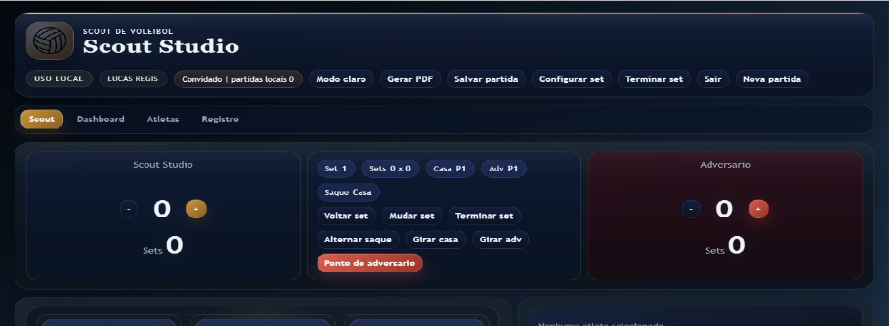

Scout de Vôlei
Foi uma primeira tentativa de registrar partidas pelo navegador e acabou servindo de ponto de partida para ideias que desenvolvi melhor depois.

Sobre o projeto
O Scout de Vôlei foi uma das minhas primeiras tentativas de transformar o registro de uma partida em uma ferramenta própria. A ideia era usar cliques para acompanhar placar, saque, rotação, sets e ações dos atletas, deixando as informações salvas no navegador.
Hoje eu consigo enxergar várias limitações nessa versão, principalmente quando comparo com o que aprendi construindo o Scout Trainer. Mesmo assim, preferi manter o projeto no portfólio porque ele ajuda a mostrar o caminho: as primeiras decisões, o que não funcionou tão bem e como uma ideia foi ganhando mais estrutura com o tempo.
Ainda quero revisar com calma o que deve ser aproveitado, separado ou incorporado ao projeto mais novo. Por isso, não tratei os dois automaticamente como se fossem a mesma coisa.
Notas de desenvolvimento
- Criar uma interface de registro rápido.
- Organizar informações por partida e atleta.
- Perceber limites de uma primeira versão e usar isso para orientar o projeto seguinte.
Ferramentas
- HTML
- CSS
- JavaScript
- Armazenamento no navegador
- CSV